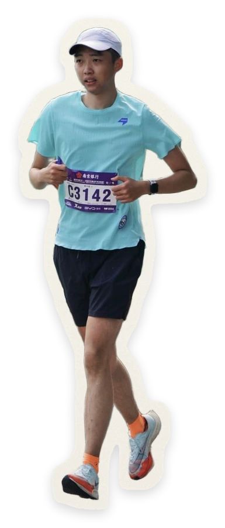

王文昊 Wang Wenhao
关于
软件工程专业毕业，现在是非典型数据分析师和业余独立开发者。什么都懂一点，能分析，能设计，能开发，能运维。对数码科技有与生俱来的浓厚兴趣。参加过十几次马拉松比赛，爱拍照片。生活在南京。
项目
- 2026 Saudade 往时 把相册摊开成一天：按钟点回看往年同一时刻拍下的照片，同一分钟的多张叠成一摞相纸；含桌面小组件，照片全程本机处理，无广告无账号。已在 App Store 上架，买断制无内购。 独立开发 · iOS
- 2026 Switch 周报 每周一出版的 Switch 新作与热销档案，每期含中文简介、官方截图与 Metacritic 口碑，支持邮件订阅，已归档 3 期。 独立开发 · 周报
-
2026
CAMCOP 相机对比工具
收录 1,144 台相机的五视角结构化数据集，支持多机同屏对比、叠加与并排视图；微信小程序同步上线，扫码即可打开。
独立开发 · 小程序
微信扫一扫，打开「CAMCOP」小程序
1,144 台相机 · 五视角对比 · 随身查询
- 2026 abetterplace2.live 个人网站集群，四个子站同源同栈：摄影作品集、Metro 磁贴画廊、马拉松赛历与 PEDAL 速度模拟器，连同相机对比工具、Switch 周报与 Saudade 落地页，全部跑在 OSS + CDN 上，含全球节点加速与证书自动续期。 独立开发 · Web
履历
-
2025 — 至今
南京红松信息技术有限公司/数据工程师
负责电信运营商大数据分析：数据资产建设、指标体系与专题分析、十余省份周期性报表交付，自研 20 余个自动化工具。
-
2022 — 2025
彩讯科技股份有限公司（驻咪咕互动娱乐）/数据分析师
负责月活 2 千万大屏产品的核心指标监控与看板维护；2024 年套娃整改中通过漏斗分析推动分省策略优化，曝光 +5.3%、点击 +8.9%、转化 +9.6%。
-
2021 — 2022
新大陆软件工程有限公司/数据仓库开发工程师
江苏移动经分数据中台数仓全流程开发，Oracle PL/SQL 查询优化与索引重构。
-
2020 — 2021
南京万得资讯科技有限公司/数据分析师
从零搭建全国土地交易数据库（日均采集 10 万+ 条），主导 EDB 商业地产报告模块与九大新一线城市专题报告。
-
2015 — 2019
天津师范大学/软件工程 · 本科
主修数据结构、操作系统、计算机网络与软件项目管理。
contact me@retter.wang